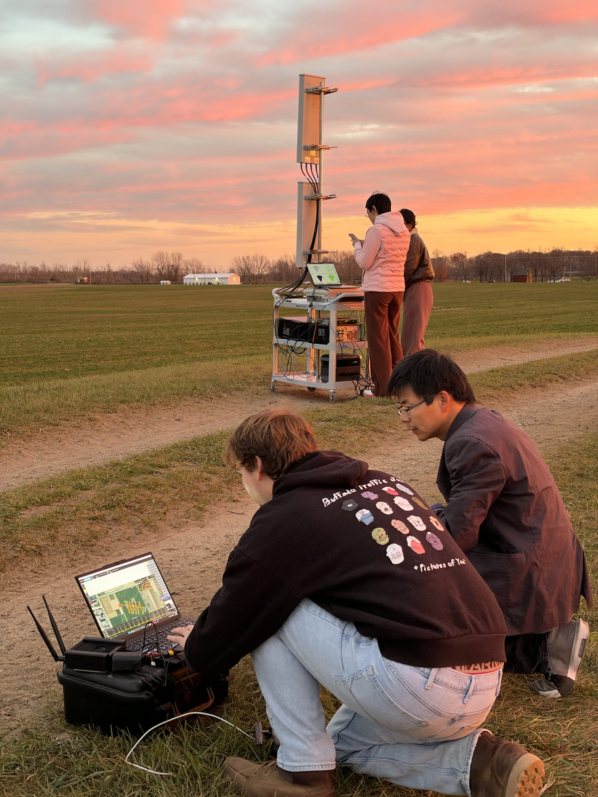
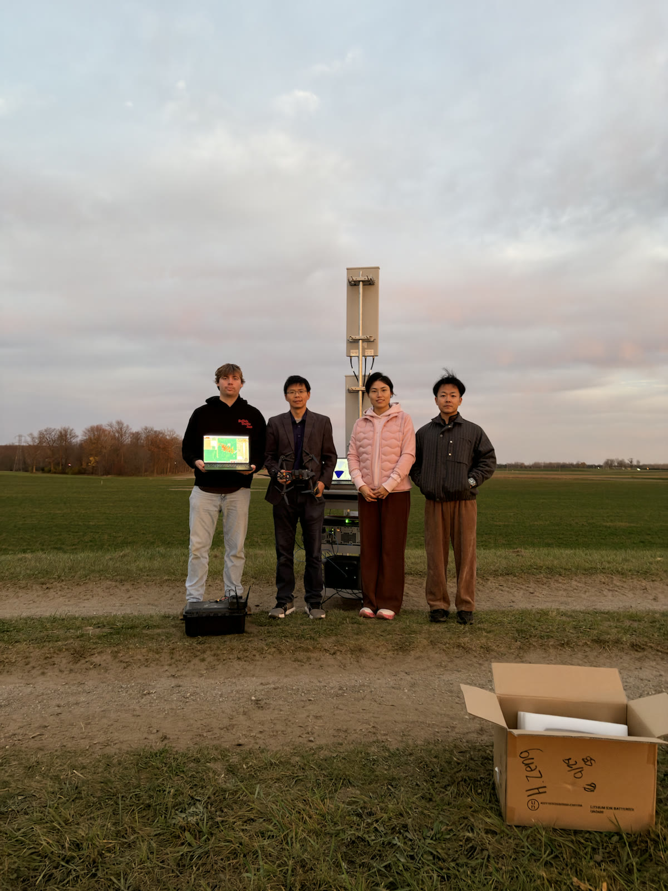

Transmit
The O-RU and O-CU/DU generate and radiate a 5G OFDM waveform through the base-station antenna.
This field experiment investigates how a 5G platform can support communication and environmental sensing with the same radio infrastructure. A drone serves as a moving aerial target while the receiver processes reflected signals in real time.
Integrated sensing and communication (ISAC) allows a wireless system to deliver data while also using radio reflections to perceive its surroundings. Reusing communication waveforms and infrastructure can reduce the need for a separate radar platform and enable sensing functions such as localization, tracking, motion estimation, and situational awareness for future 5G and 6G networks.
The O-RU and O-CU/DU generate and radiate a 5G OFDM waveform through the base-station antenna.
A colocated sensing receiver and antenna array capture reflections as the drone moves across the field.
Real-time processing maps reflected energy across range, azimuth, and Doppler to reveal target position and motion.

